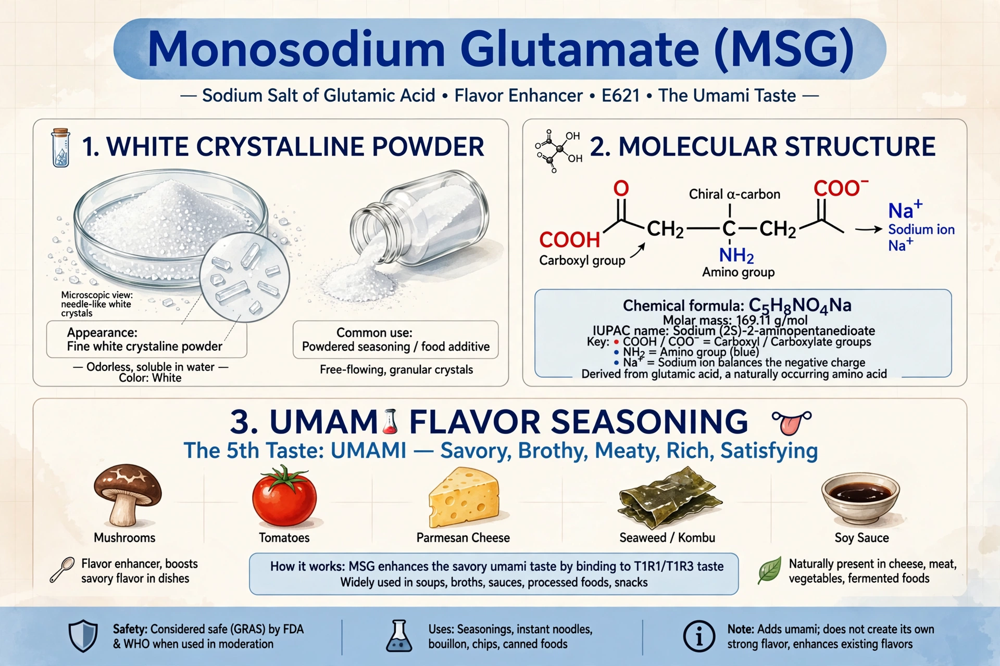

Monosodium glutamate (MSG) is the sodium salt of glutamic acid, used as a flavour enhancer. It imparts umami, the savoury taste, and is commonly added to soups, sauces, snacks and restaurant dishes. Glutamate occurs naturally in tomatoes, cheese and seaweed.

Monosodium glutamateIn 1908 Japanese chemist Kikunae Ikeda isolated glutamic acid from kombu seaweed broth and identified it as the source of umami; MSG was commercialised as Ajinomoto from 1909. It is now produced mainly by bacterial fermentation.
A 1968 letter describing symptoms after eating at Chinese restaurants popularised the idea of a symptom complex attributed to MSG, but controlled studies have generally not found consistent adverse effects at normal dietary levels, and regulators regard MSG as safe. Like tartrazine, it remains a culturally debated additive.